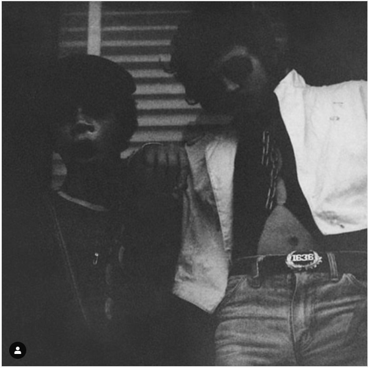
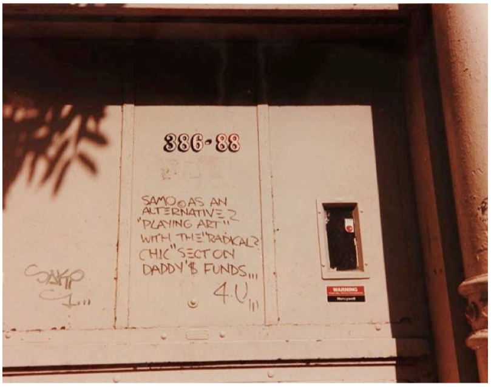
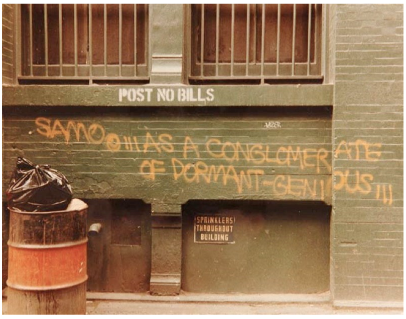
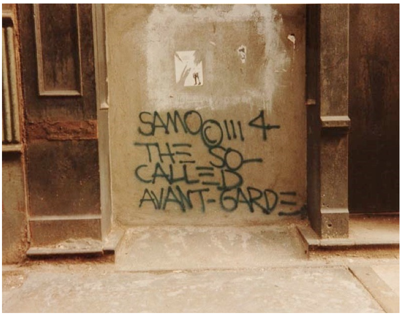
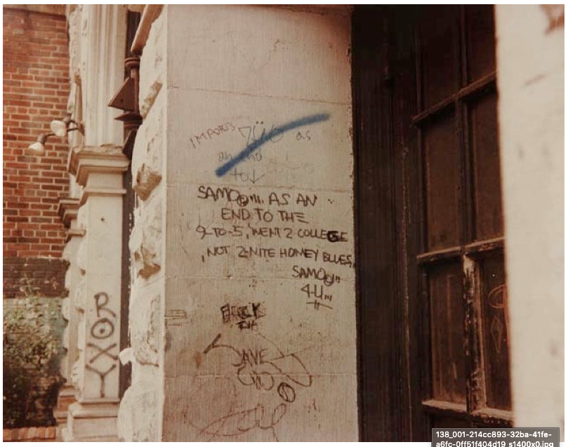
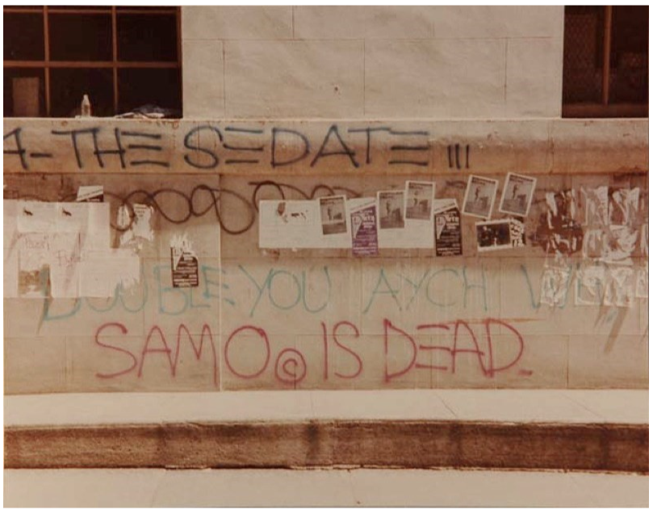
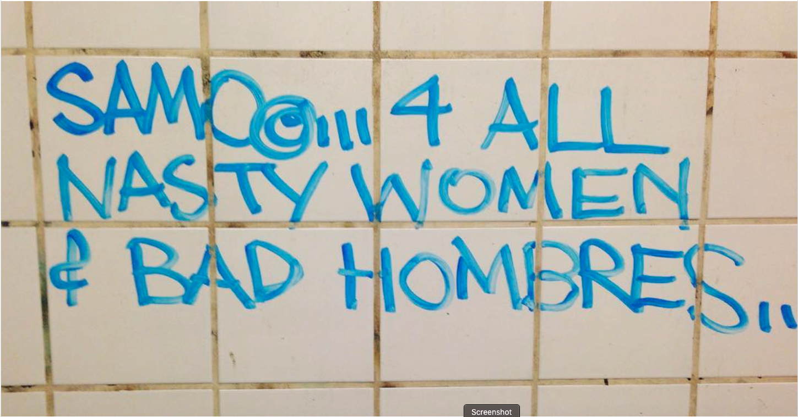

In 1976, Basquiat and his friend Al Diaz began spray painting graffiti on buildings in Lower Manhattan, working under the pseudonym SAMO.The two would do so under the pseudonym SAMO which stood for “Same old Sh!t”. Their graffiti was to draw attention to the racial divide. They would leave the “SAMO” tag on their work.





